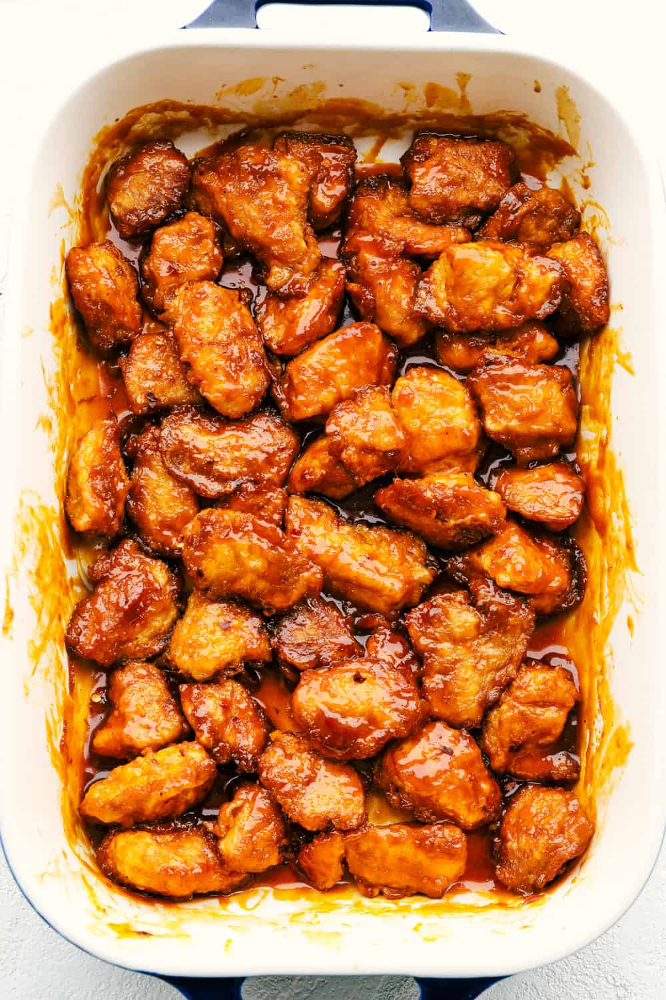

Fire Chicken
This Firecracker Chicken is sweet, spicy and adds a nice kick to your meal. The chicken is super tender, and juicy. Once you smother it in the flavorful sauce, you will have everyone wanting to come back for seconds!
Ingredients
- 1/4 cup canola oil
- 4 chicken breasts, boneless skinless
- salt
- pepper
- 1 cup cornstarch
- 2 large eggs
Sauce
- 1/3 cup buffalo sauce (if you like more heat use hot sauce, like Frank's brand)
- 1 1/4 cup light brown sugar, packed
- 1 tablespoon water
- 2 teaspoons apple cider vinegar
- 1/2 teaspoon salt

Instructions
- Preheat oven to 325 degrees Fahrenheit. Cut chicken breasts into bite-sized pieces and season with salt and pepper.
- In separate bowls, place cornstarch and slightly beaten eggs. Dip chicken into cornstarch, then coat in egg mixture. I have also found that you can put the cornstarch in a gallon-sized bag and shake the chicken to coat it.
- Heat canola oil in a large skillet over medium-high heat and cook chicken until browned. Place the chicken in a 9 x 13 greased baking dish.
- Combine the Buffalo sauce, brown sugar, apple cider vinegar, water, salt, and red pepper flakes in a medium-sized mixing bowl.
- Pour the sauce over the chicken and bake for 1 hour, stirring the chicken every 15 minutes.